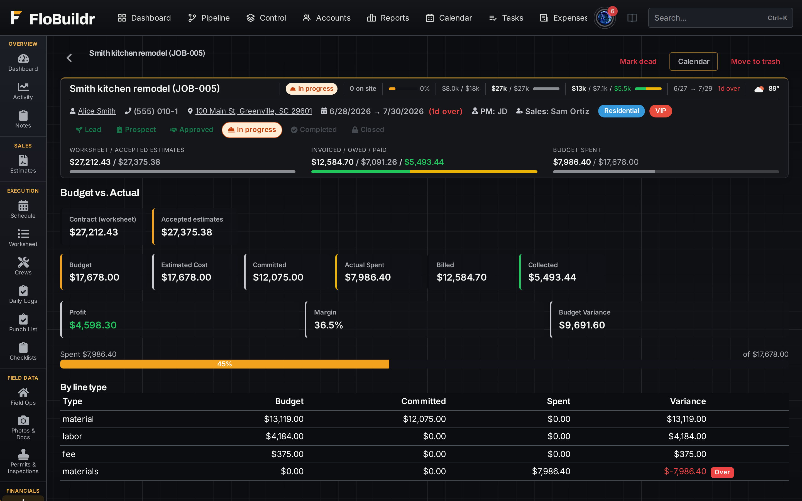
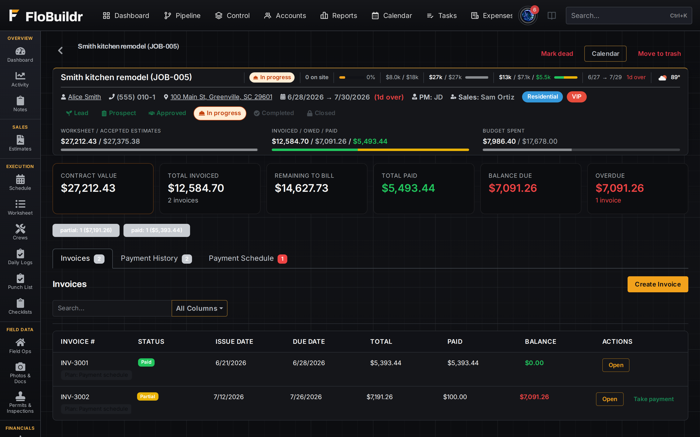
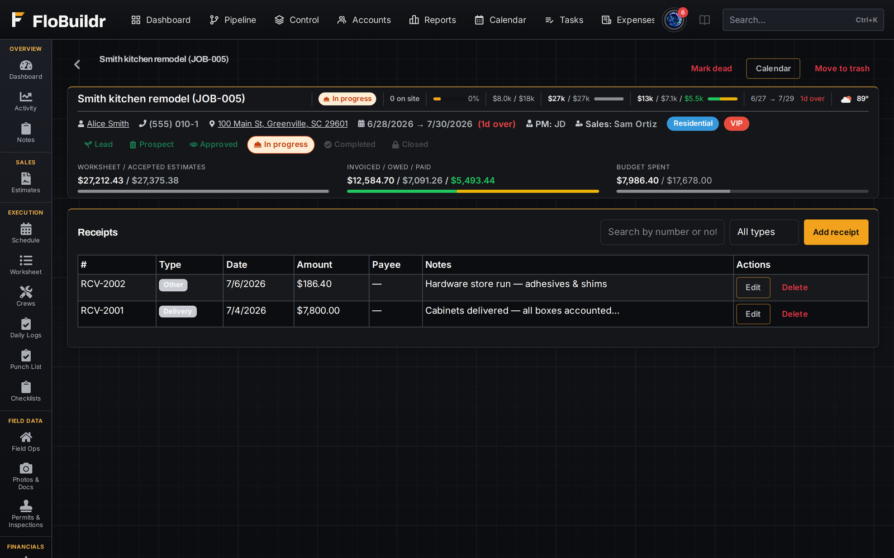
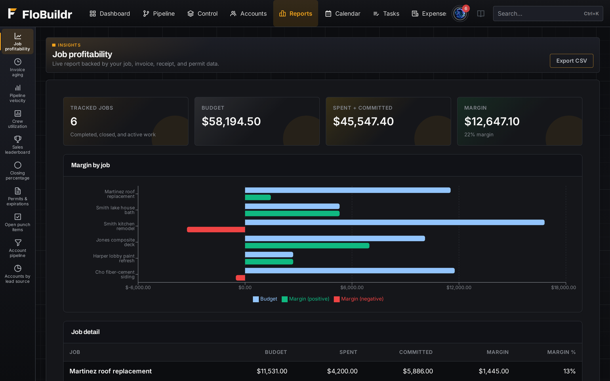

While it moves
Margin you can still do something about.
Budget vs Actual updates while the crew is on site, and every money carrying edit is on the record.
FeaturesCosting & payments
Budget vs Actual, invoicing, expenses, and reporting stay live on the Job Profile, so you catch overruns before the final draw is gone, not after.
See contract value, accepted estimates, budget, committed, actual spent, invoiced, and collected on one screen, including overruns by line type. Catch a material or labor line running hot while there's still time to do something about it, not at closeout.

Deposits, progress draws, and finals against live job cost, not a guess based on percent complete. Send an invoice straight off the Job Profile and it shows up in the customer portal the same day.

Attach delivery and store receipts to the Job Profile as money goes out, amount, type, and notes in one place. Company expenses that aren't tied to a job live on their own list; either way, actual cost reflects what you spent, not a shared inbox of photos.

Win rate, stage velocity, sales leaderboard, job margins, aging receivables, and crew hours, pulled from the same records you already use to run jobs, not a separate BI tool you have to maintain.

Every edit that carries money is recorded field by field: line items added, repriced, or removed; estimates accepted, un-accepted, or trashed; invoices created, edited, sent, voided, or deleted; payments recorded, changed, or removed; payment schedule updates.
Each entry shows who made the change and when, which fields moved, and the before and after values, with the full snapshot there if you need it. Nothing in the change log can be edited or deleted. It answers the question that always arrives six weeks later, why is this job's total different from the number I quoted, without anyone having to remember.
Also in this area
While it moves
Budget vs Actual updates while the crew is on site, and every money carrying edit is on the record.
Start free and watch Budget vs Actual update while a real job is still moving.
Start free trial Book a demoFree for 60 days. No credit card. Every feature on.